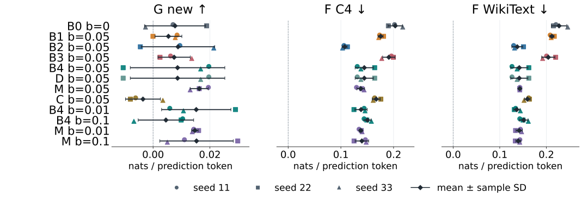
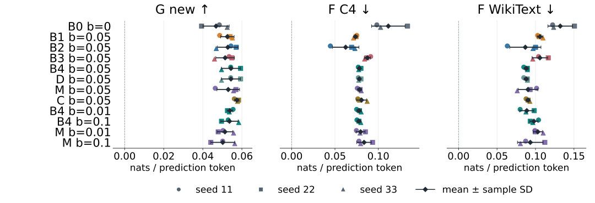
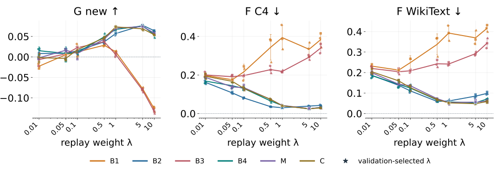
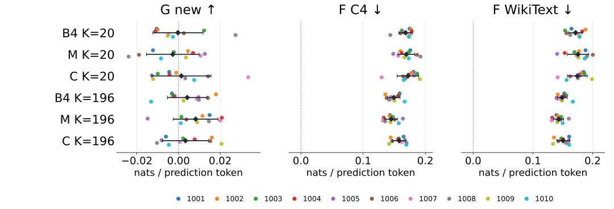
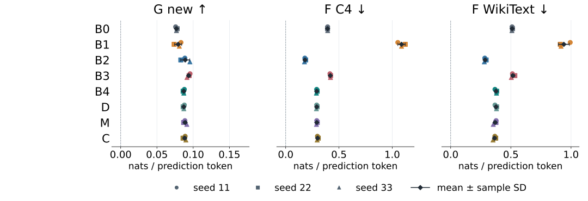
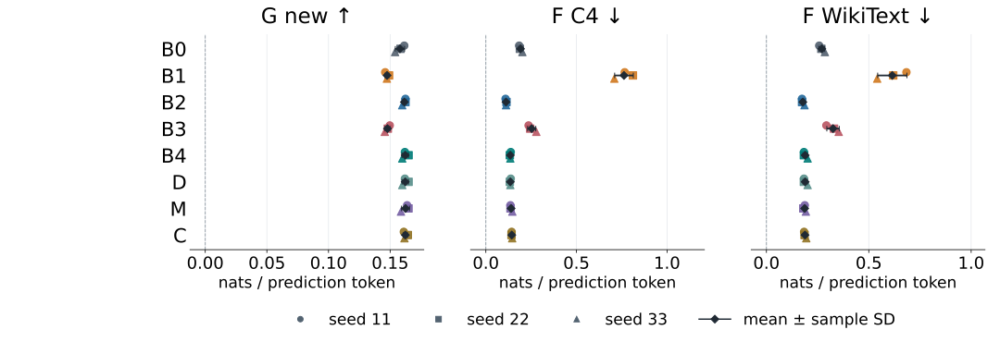

Pythia-410M 在英文数学文本上继续训练：
一次控制比较，而非新回放算法。
替代通用文本与自生成文本，哪一种更合适？
硬标签交叉熵与冻结教师KL，有何差别？
有限库里，分层与聚类是否稳定胜出？
已开放：主实验、A权重网格、B选库draw、C410/1B/2.8B长程NLL、五组行为评价与归档重训QA。
数学文本NLL不是数学推理正确率。
| 组 | 回放来源 | 回放目标 | 选库规则 |
|---|---|---|---|
| B0 | 无回放 | 仅目标CE | — |
| B1 | C4替代通用文本 | CE | random |
| B2 | C4替代通用文本 | 教师→学生KL | random |
| B3 | 冻结模型自生成 | CE | random |
| B4 | 冻结模型自生成 | 教师→学生KL | random |
| D | 同一生成池 | 教师→学生KL | 整块精确去重后random |
| M | 同一生成池 | 教师→学生KL | teacher-NLL五分位分层 |
| C | 同一生成池 | 教师→学生KL | 特征聚类代表 |
主设置：seed 11/22/33；其余控制共享。D与B4本次bank和完整权重相同，属于null对照；D不增加独立重复。
主库196块 × 511预测位置
100,156个位置
不是累计训练曝光。
目标10M，回放0.5M
b = Tᵣ / Tₜ = .05
总处理占比p≈4.76%。
两项loss各自求均值
L = CEₜ + λ Lᵣ
主λ=.05，独立于b。
单预测token相对系数约 λ/b；
它不是梯度、Adam更新或计算量之比。
0.5M回放≈同一196块库的4.99次容量曝光。A改变λ，B改变K；不把重复曝光叫新增独立数据。
initial数学NLL − adapted数学NLL
越大越好。
adapted C4 NLL − initial
越小越好，负值才是改善。
另一旧域代理，单独报告
C4并非Pythia原预训练集。
主/A/C410：3个pipeline seed。
B：固定pool/train=11的10个选库draw。
5000次配对文档重采样，条件于固定checkpoint；不能代替seed或draw的SD。
本稿图固定token加权。等文档权重完整保留：例如C主final的G均值为−.00357（token）/+.01832（等文档），估计对象不同，不能择优报告。

完整36点 × 三指标；同来源KL相对CE的旧域损失更小。
生成来源与M/C没有统一优势；D = B4，仍保留两组标签。

36个逻辑配置：best的G更高、两个F更低（描述计数）。
best实际目标曝光1.6352M–4.9056M；每条完整训练仍为10M。

126逻辑条件＝108新增训练 + 18主实验复用；每点3 seed。
验证所选λ：B1 .05｜B2 1｜B3 .1｜B4 5｜M 5｜C 1。
星号只连接既有验证选择ID；测试不重选λ。各自选λ比较的是“方法＋选参政策”，不是固定同λ的objective效应。

60端点全部显示；n=10是selection draw，不是训练seed。
M在K196三项均值较有利，K20三项均值反向；六格端点SD未低于B4。

24端点，matched extended initial；与下一页共用坐标范围。
B1的大遗忘完整保留；生成KL相对CE的数学ΔG为−.00684。

生成KL−CE的数学ΔG为+.01441；24项best六指标均优于各自final。
实际best约35.026M / 40.030M / 55.041M；完整训练均为100M。
| 阶段 | 独立训练 | 累计parent wall |
|---|---|---|
| 主实验 | 36 | 3.41 h |
| A新增 | 108（另18复用） | 10.28 h |
| B | 60 | 5.70 h |
| C410 | 24 | 13.95 h |
表中是各run父项累计，不是研究elapsed或纯GPU秒；teacher已内嵌，final/best不重复收费。共享生成/特征费计一次；下载、归档等不在此训练表内。
局限：替代旧域、有限pool与文档抽样；NLL分层不等于梯度分层，文本NLL不等于推理能力。
八组全部为负
−0.277（B2）… −0.299（B1）
NLL比未适应时更高。
24个全部在 20.0148M
G 0.1182–0.1269
FC4 0.087（B2）–0.842（B1）
ΔG +0.0220±0.0019
ΔFC4 −1.3004±0.0137
ΔFWiki −0.8459±0.0519
目标验证NLL在20.01M最低，45/65/85M阶梯上升（≈5遍重复）。CE回放比不回放更差：FC4 从B0的0.8163升到B1的1.6268、B3的0.9369；B4−B2的C4差+0.3692。
该结果限定在给定学习率与日程；过冲是观察，不归因单一超参数，也不外推为“延长训练有害”。
五组 +0.1165 … +0.1179
没有过冲；best 同在 20.0148M
ΔG +0.0068±0.0010
ΔFC4 −0.5537±0.0213
ΔFWiki −0.2620±0.0153
ΔG +0.0002±0.0006（方向混合）
ΔFC4 +0.0074、ΔFWiki −0.0028
M−B4 三项≈0
只有matched五组（B0/B1/B2/B4/M），无B3/D/C；25M≈1.25遍、LR 1e−5。CE回放仍劣于不回放：FC4 0.0424（B0）→0.5774（B1）。
不同规模同时改变学习率、累计曝光与重复遍数，遗忘量级本身随适应强度变化；不能把“更大模型遗忘更小”当作已识别的规模效应。
PiQA与HellaSwag；acc_norm主评分、acc辅助；题目区间条件于固定checkpoint。
NLL排序与选择题准确率排序不总一致；HellaSwag净提高仍伴随部分旧正确题变错。局部表示、输出KL、文本NLL与准确率描述不同对象。
从已发布归档解出原始helper与输入，relocate到新namespace，重训固定条件；CPU算完整模型状态指纹。
0732归档 8/8
最终归档 8/8 → 16/16 → 32/32 → 24/24
全部任务严格rc0、无停止。
主实验全部36次训练的final+best共 72/72 端点与原始检查点逐位相同（每个405,334,016元素）；D=B4指纹相同。
这是本平台/本容器下由交付归档直接重训的权重可复现性；不比较训练轨迹、优化器或RNG状态，不外推跨平台，不是新的科学重复。
NLL与五组行为评价全部在各自完整闭包后解封、独立复核并写入32页报告；十份权重包与最终项目归档已发布，可编辑树已恢复验收。
1B的100M日程过冲、2.8B仅五个matched组、跨模型学习率与重复遍数同时变化；不能合并seed数或作纯规模/纯时长因果。
答辩核心回答：
KL减少本设置的旧域退化；
来源与选库没有跨条件稳定赢家；
固定库CE回放在三个规模上均劣于不回放。
完整来源：研究报告（32页）、A/B/C410/C1B/C2.8B独立复核、归档重训QA文档；文献支持范围见literature/references.bib。作者/学校信息由学生后续补齐。